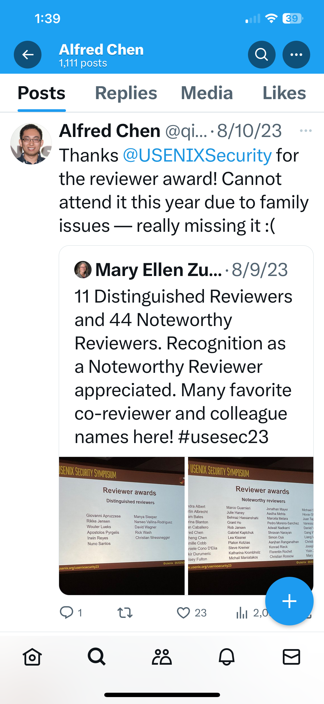
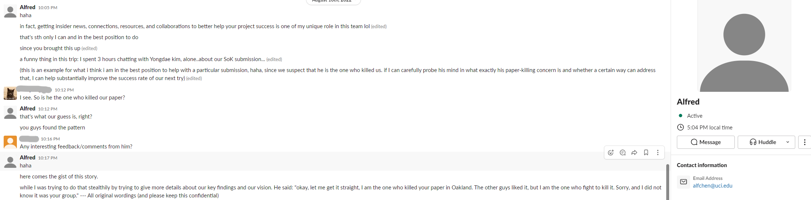
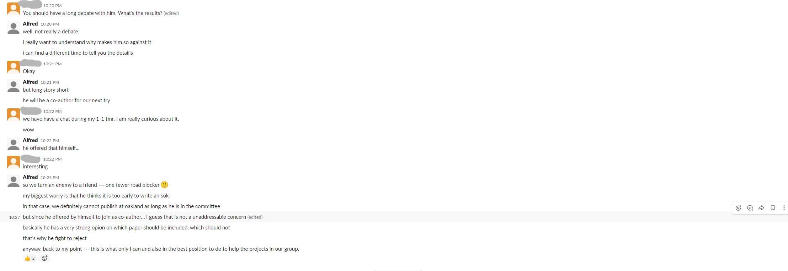

Disclaimer & Information Statement
This website serves as a record of past events related to academic integrity and professional conduct within academic institutions. It contains internal group communications, including Slack messages, emails, WeChat conversations, and lab policies. The purpose is to present factual information and promote discussions on ethical standards in academia.
This website provides factual records of events that occurred on or before 2023. The content reflects past incidents based on available communications and documented materials. It does not represent any current situation. For up-to-date information, please consult current or former students.
Some materials have been shared with the University of California, Irvine (UCI) and several academic conferences. UCI conducted an independent investigation under the UC Abusive Conduct Policy following a formal complaint. The investigation substantiated violations of the policy, and the findings were provided to the leadership of the Donald Bren School of Information & Computer Sciences for appropriate administrative action. Due to university confidentiality policies, specific details of the violations and any actions taken have not been disclosed.
USENIX reviewed concerns related to confidentiality in the peer review process. They acknowledged that certain actions violated program committee confidentiality agreements, such as sharing submission PDFs and leaking review content. However, they determined that there was no direct harm evidence warranting formal sanctions. USENIX also clarified that it does not conduct broad investigations into individuals but remains open to providing information if requested by relevant bodies.
The purpose of this website is to document historical events and promote discussions on academic integrity. No new accusations are made beyond what has already been acknowledged by institutions.
By continuing to browse this site, you acknowledge that the content is historical in nature and does not imply any present claims or accusations.
Selected Records & Communications
Potential Academic Violations
These materials document concerns related to academic integrity, including questionable paper review practices and submission handling.
Email: Shared Related SubmissionLeaked Files by Alfred
The following files were leaked in violation of academic confidentiality. Due to the sensitive nature of these documents, they are not uploaded here.
Leaks Where Alfred Was Not on the Program Committee
These files were leaked to Alfred by someone else, containing confidential research submissions and a review:
- #271 - ACSAC 2019 (Redacted).pdf
- CCS 2020 - Paper 177.pdf
- CCS 2020 - Paper 200.pdf
Leaks Where Alfred Was on the Program Committee
These paper reviews were leaked despite Alfred not being listed as a reviewer, violating confidentiality agreements:
- #113 - USENIX Security '22 Fall.pdf
- #168 - USENIX Security '22 Summer.pdf
- #216 - USENIX Security '22 Fall.pdf
- #299 - USENIX Security '22 Fall.pdf
- #305 - USENIX Security '21 Fall.pdf
- #311 - USENIX Security '21 Fall.pdf
- #329 - USENIX Security '21 Fall.pdf
- #337 - USENIX Security '22 Summer.pdf
- #352 - USENIX Security '21 Fall.pdf
- #484 - USENIX Security '22 Fall.pdf
- #62 - USENIX Security '21 Summer R1.pdf
- #62 - USENIX Security '21 Summer.pdf
- #81 - USENIX Security '21 Summer.pdf
Student Reviews and Recognition
Professor Qi Alfred Chen leveraged student labor for paper reviews, yet he only started to publicly acknowledge their contributions when he was reported in 2024. An email from a student confirmed writing 62 paper reviews between February 2, 2021, and October 20, 2023. However, Alfred stated that fulfilling these tasks was merely a part of their PhD training and did not warrant external recognition.
Email: Acknowledgement for Student ReviewsDespite students performing extensive review work, Alfred took sole credit for the recognition. The lack of acknowledgment raises concerns about the fairness and ethics of how student contributions were utilized in the academic review process.
Policies and Group Guidelines (Old Versions: 2021-2022)
These documents outline lab policies and work expectations from years ago. While outdated, they provide insight into the culture and requirements imposed on students at the time.
Group Info & Policy (2022-09-23)Email: Promote Working-in-the-Lab Atmosphere
Financial Issues
Evidence of reimbursement practices where students were compensated with Amazon gift cards instead of proper university-approved methods.
Email: Reimbursement Through Amazon Gift CardExperiment Documentation
This video documents an experiment where a student was instructed to use their own car for a crash test on an open road. The vehicle, running a maliciously modified autonomous driving software, was deliberately crashed into boxes. This raises significant concerns regarding research ethics, safety, and the exploitation of students for high-risk experiments.
Commanding Students for Personal Errands
This message shows an instance where Alfred instructed students to deliver certificates to a visiting professor at night, highlighting concerns about the use of students for non-research tasks.

Other Materials
Additional materials related to research and academic interactions.
